HOS01A — complete handout
CS445 Software Process Management
HOS01A — How to use a cloud development environment — GitHub Codespaces
Developed by Kina Anh Bui (03/13/2025) · Reviewed by Sam Chung (04/02/2025) · Reviewed by Clark Ngo (04/01/2026)
Before You Start
- Screenshots may be different from your environment.
- The directory path shown in screenshots may be different from yours.
- The steps might have subtle discrepancies. Please use your best judgment while completing each step in this cookbook-style tutorial.
- Some steps may not be explained in detail. If you are not sure what to do:
- Consult the resources from the course.
- If you cannot solve the problem after a few tries (usually 15–30 minutes), ask a TA for help.
Readings and Examples
- Visit the CS 445 Repository for Examples.
- Select the related module.
- Visit the README.md file.
- Find examples for your practices.
Learning Outcomes
- Section 1: Accessing GitHub Codespaces
- Section 2: Installing extensions needed and running Python Notebooks
- Section 3: Using Docker
- Section 4: Pushing your work to GitHub
Upload the following to your GitHub Repository generated from GitHub Classroom
- Upload the screenshot of your ‘01 Hello World’ as 01_hello_world_firstname_lastname.png by using your first and last name.
- Upload the screenshot of your ‘02 Adding a Dockerfile’ as 02_adding_dockerfile_firstname_lastname.png by using your first and last name.
- Upload the screenshot of your ‘03 Confirm image’ as 03_confirm_image_firstname_lastname.png by using your first and last name.
- Upload the screenshot of your ‘04 Running container’ as 04_running_container_firstname_lastname.png by using your first and last name.
- Upload the screenshot of your ‘05 Viewing containers’ as 05_viewing_containers_firstname_lastname.png by using your first and last name.
Key Concepts
GitHub Codespaces
- Cloud Development Environment: GitHub Codespaces provides a cloud-based development environment that allows developers to code directly from their browsers or VS Code. It offers a fully configured environment with necessary dependencies pre-installed.
- Fast Setup: Codespaces reduces setup time by providing pre-built environments, eliminating the need for manual configuration.
- Integration: Seamlessly integrates with GitHub repositories, enabling developers to start coding immediately with complete version control support.
Python
- Programming Language: Python is a high-level, general-purpose programming language known for its readability, versatility, and strong community support.
- Use Cases: Commonly used in web development, data science, machine learning, and automation due to its extensive library ecosystem.
- Dynamic and Interpreted: Python executes code line by line, making debugging and prototyping applications easy.
- Cross-Platform Compatibility: Runs on various operating systems without modification, making it ideal for developing scalable applications.
Jupyter
- Interactive Computing: Jupyter Notebook is an open-source web application that allows users to create and share documents containing live code, equations, visualizations, and text.
- Multi-Language Support: Supports various programming languages, with Python being the most widely used.
- Data Science and Research: Frequently used in data analysis, machine learning, and research due to its ability to execute code in cells and display output instantly.
- Extensibility: Supports plugins and extensions, allowing integration with different libraries and tools.
Docker File
- Automated Image Building: A Dockerfile is a script containing a series of instructions for building a Docker image.
- Reproducibility: Ensures consistent environments by defining dependencies, configurations, and installation steps.
- Layered Structure: Each instruction in a Dockerfile creates a new layer in the image, making it efficient for caching and updates.
- Customization: Users can define environment variables, network settings, and commands to tailor container behavior.
Docker Image
- Executable Package: A Docker image is a lightweight, standalone package containing everything needed to run an application, including code, runtime, libraries, and dependencies.
- Template for Containers: Acts as a blueprint from which containers are instantiated.
- Portability: A Docker image can be shared via container registries like Docker Hub, making deployment easier across different environments.
- Immutable: Once built, images remain unchanged, ensuring consistency across deployments.
Docker Container
- Runtime Instance: A Docker container is a running instance of a Docker image, providing an isolated execution environment.
- Lightweight and Efficient: A Docker container uses the host OS kernel, making it more resource-efficient than traditional virtual machines.
- Scalability: Containers can be easily scaled up or down based on application demand.
- Isolation: A Docker container ensures that applications run independently without affecting the host system or other containers.
Section 1: Accessing GitHub Codespaces
Follow the instructions here.
GitHub Codespaces are online cloud-based development environments that allow you to easily write, run, and debug your code. It is fully integrated with your GitHub repository and provides a seamless experience for developers.
Prerequisites:
- Create your GitHub account
Section 2: Installing extensions needed and running Python Notebooks
1) Installing Python
- Click on Extensions in the left panel.
- Search Python in the marketplace.
- Click Install.
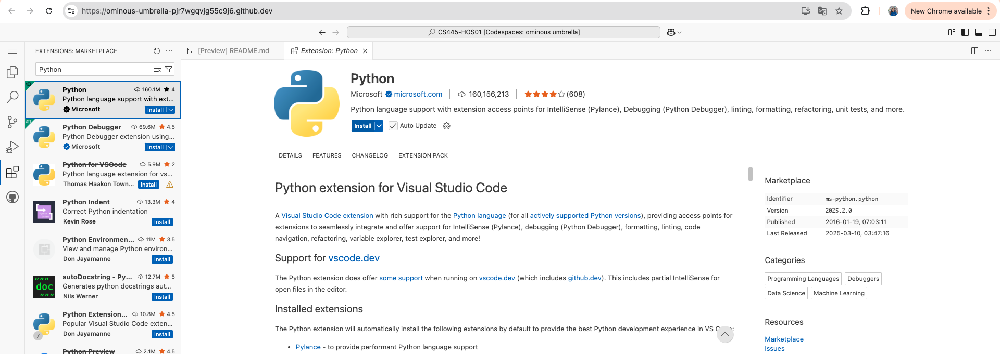
PDF page 5 — Installing the Python extension (screenshot from handout)
2) Installing Jupyter
- Click on Extensions in the left panel.
- Search Jupyter in the marketplace.
- Click Install.
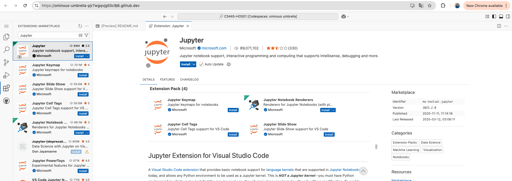
PDF page 5 — Installing the Jupyter extension (screenshot from handout)
3) Running a Hello World Python program in a Python Notebook in GitHub Codespaces
- Click on New File and name helloworld.ipynb.
- Click + Code and then write the code below in helloworld.ipynb:
print("Hello World")
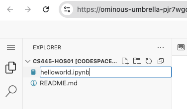
Page 6 — notebook file
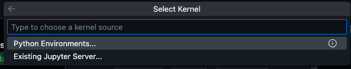
Page 6 — kernel: Python Environments
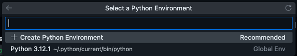
Page 6 — Python environment version
- Click on the execute cell option, and the output will appear as in the handout.
- If prompted for Kernel, choose Python Environments.
- If prompted for Python Environment, select Python 3.12.1 (or whichever version is shown).
- Take a screenshot of your ‘01 Hello World’ as 01_hello_world_firstname_lastname.png by using your first and last name.
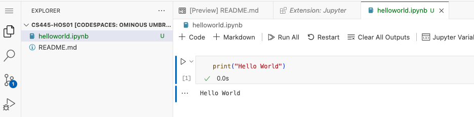
PDF page 7 — example Hello World output (your screenshot should look similar)
Section 3: Using Docker
1) Installing Docker
- Click on Extensions in the left panel.
- Search Docker in the marketplace.
- Click on the Install button.
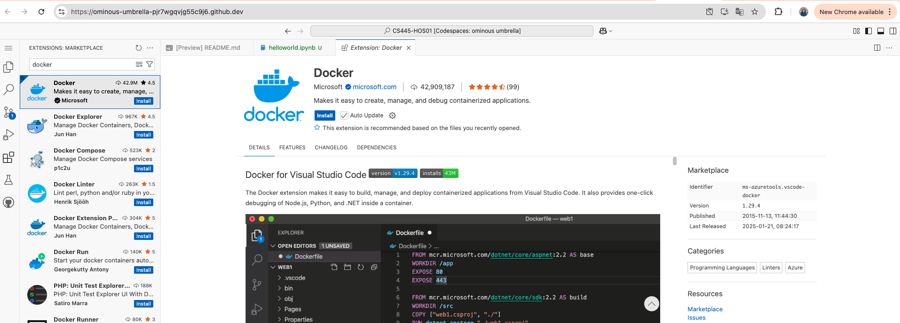
PDF page 8 — Installing the Docker extension
2) Adding a Dockerfile
A Dockerfile is a specification for building a Docker image. We will write a Dockerfile, use the Dockerfile to make a custom image, create a container using the image, shell into the container, and start the Lisp REPL (Read-Eval-Print Loop).
- Click on New File and name Dockerfile.
- Note: Dockerfile does not have an extension. It should be named as Dockerfile.
- Write the code below in Dockerfile (as shown in the course handout):
# Dockerfile
FROM ubuntu:20.04
RUN apt update && apt install -y sbcl
WORKDIR /usr/src
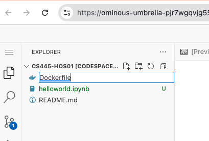
PDF page 9 — Dockerfile in file tree
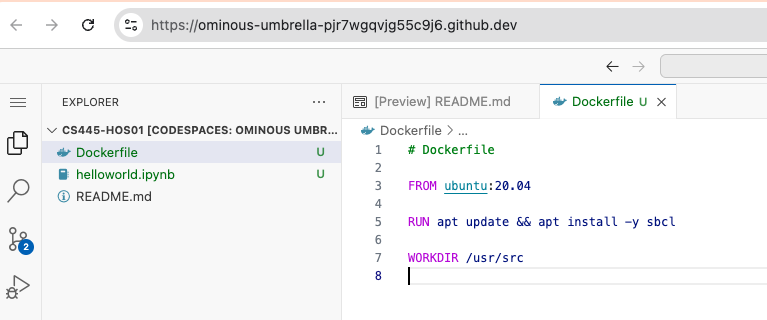
PDF page 9 — Dockerfile contents in editor
3) Adding a Dockerfile (build)
To build our image, use the Docker build command in the terminal (View → Terminal). Ensure that you are in the working directory containing your new Docker file.
The -t lisp part says, “Give the resulting image a tag of lisp.” The dotted part (.) says, “When you look for the Dockerfile to build the image in the current directory.”
- In your Terminal, type the following command:
docker build -t lisp .
- The output will match the successful build shown in the handout.
- Take a screenshot of your ‘02 Adding a Dockerfile’ as 02_adding_dockerfile_firstname_lastname.png by using your first and last name.
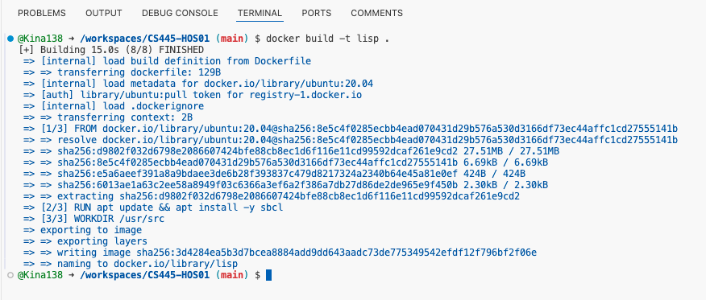
PDF page 10 — docker build -t lisp . output
4) Confirming the image is created
Use the docker image ls command to list all existing images, which should now include the image.
- In your Terminal, type the following command:
docker image ls
- The output will show your tagged image.
- Take a screenshot of your ‘03 Confirm image’ as 03_confirm_image_firstname_lastname.png by using your first and last name.
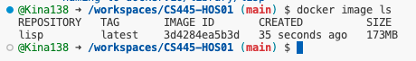
PDF page 11 — docker image ls (confirm lisp image)
5) Running the container
Run the following command. The command accesses the command line inside the container based on your image. Replace <image id> with the image id you see when you run docker image ls.
- In your Terminal, type the following command:
docker run --interactive --tty <image id> /bin/bash
- The docker run command creates a container from the image. The /bin/bash argument says, “the thing you should run on this container is the /bin/bash program.”
- The output will show a shell inside the container as in the handout.
- Take a screenshot of your ‘04 Running container’ as 04_running_container_firstname_lastname.png by using your first and last name.
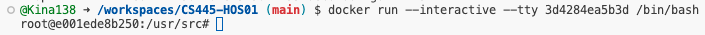
PDF page 12 — shell inside container after docker run --interactive --tty … /bin/bash
6) Viewing containers
Open a separate terminal and run docker container ls.
- Open a new terminal.
- In your Terminal, type the following command:
docker container ls
- The output will list running containers as in the handout.
- Take a screenshot of your ‘05 Viewing containers’ as 05_viewing_containers_firstname_lastname.png by using your first and last name.
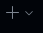
Page 13 — new terminal tab
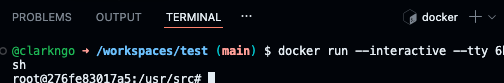
Page 13 — separate terminal
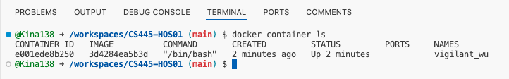
Page 13 — docker container ls listing
Section 4: Pushing your work to GitHub
The PDF headings for this section are:
- How to submit your work in GitHub
- How to submit your screenshots in GitHub
Follow your instructor and GitHub Classroom workflow to add, commit, and push your repository changes (including the screenshots above) to the remote repository.